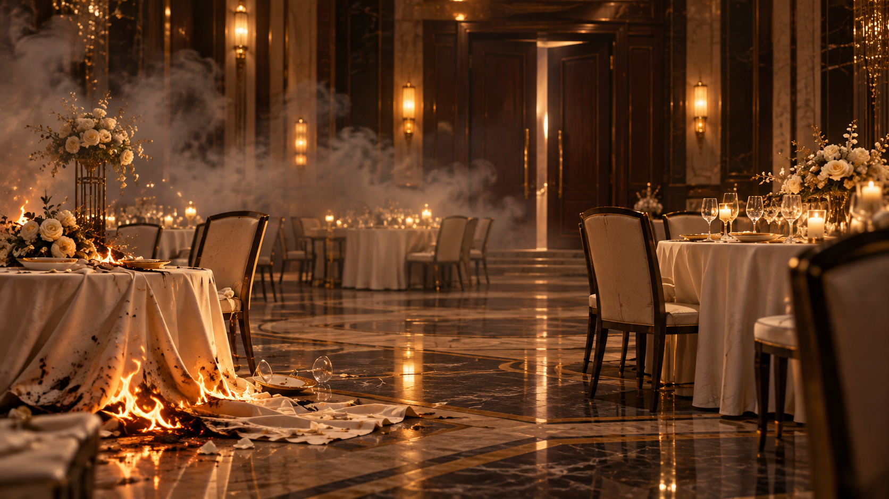
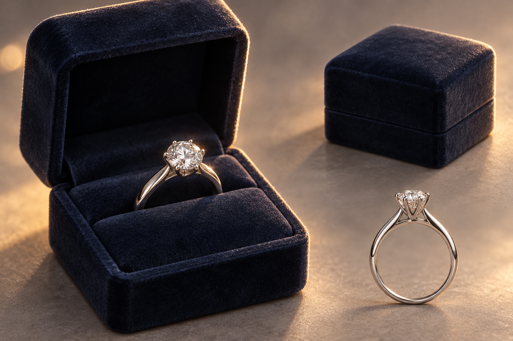
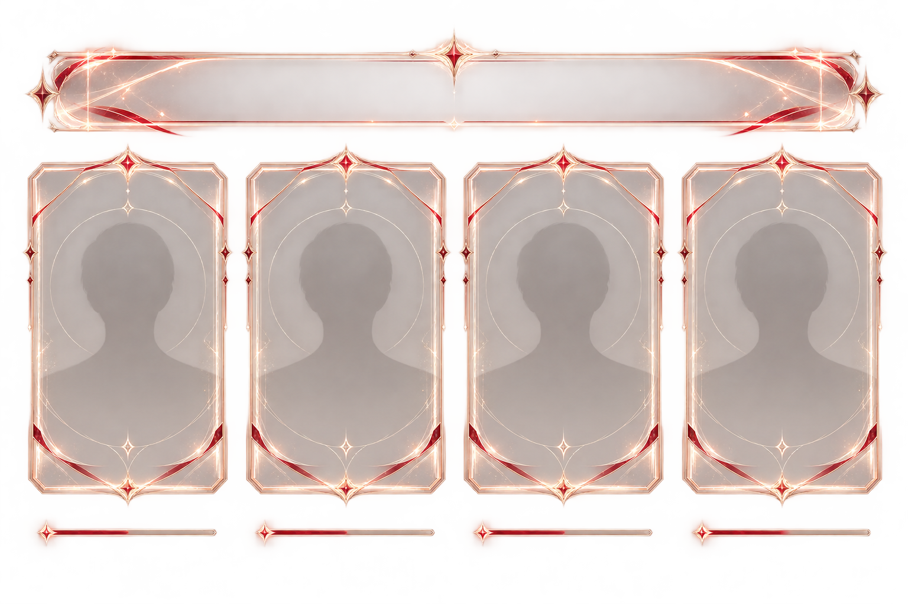

按参考图1—10依次输入；点击图片放大。剧情、台词和原始图片保留。
0秒首帧状态，只定义段首
30秒目标尾帧状态，不得提前出现尾段动作
约15秒前的内部关键状态，按对应镜头使用
约15秒后的内部关键状态，作为中段节拍参考
只锁苏晚棠脸、长发、耳钉与卧室米白睡衣；参考板多视图不复制到成片
只锁10—15秒原书记忆中的同一女主与黑礼服；不把礼服带回卧室
卧室布局、自然光、床和镜子

仅10—15秒生日宴记忆的空间与火烟，其他时间不得出现火烟
一枚银色钻戒与一只深蓝戒盒，控制摘下、装盒、闭盒顺序；道具多视图只作形态参考
系统二维提示与四档案卡的视觉；头像、数值和文字留后期，仅女主感知
苏晚棠身份与白衬衫黑裤通勤装，手上无戒
仅25—30秒办公室里的顾砚辞身份与深灰西装；不得出现在家中书桌区
0—25秒家中书桌、日光及电脑位置
25—30秒办公室左门右桌的空间布局，地点以硬切切换
两份协议、一支黑笔、一个手机与黑色文件夹；不复制道具板排版
家中闭合戒盒；赴约时盒在包内，不能提前摆在顾桌上
苏晚棠身份和通勤装；无戒指，表情克制
顾砚辞身份和深灰西装，怀疑与核对，不演成深爱
办公室左门右桌、来客站位和正反打轴线
协议两份、黑笔一支、手机与文件夹，均为道具形态参考
15秒后戒盒上桌，由闭合变打开，盒内只一枚钻戒
只参考偏写实3D肤质、头发层次、柔和主光与暖轮廓光；不替换演员脸、服装或场景
苏晚棠身份与通勤装，无戒，最后持文件夹离开
顾砚辞身份与深灰西装，桌后坐着追问，不拦人或强行拉扯
左门右桌轴线与桌至门的行走路线
先两份签字后双方各留一份，笔签完落桌；文字和签名后期合成

打开的深蓝戒盒与单枚戒指全段留在顾桌上，不回到女主手上

20—25秒系统异常提示的二维风格，仅女主感知；不画大型实体设备